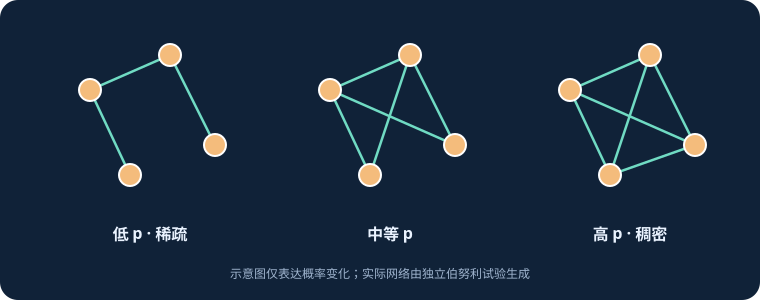

RANDOM GRAPHS / GENERATIVE BASELINES
第4章 随机网络模型
如果每一对节点都独立地随机决定是否连接，会出现怎样的网络？
为什么需要随机基线？
观察到一张网络具有较多三角形、较短路径或某个枢纽节点时，我们需要一个参照，判断这些结构是否超出了“随机连边”本身就会产生的程度。Erdős–Rényi（ER）随机图提供了一个清晰基线：固定 n 个顶点，让每一对顶点以相同概率、相互独立地决定是否连边。它不是所有真实网络的生成机制，而是帮助研究者识别非随机结构的起点。

两个容易混淆的 ER 模型
G(n,p)：对 n 个顶点的每一对不同顶点，独立地以概率 p 放置一条边。边数是随机变量。
G(n,m)：从所有恰好包含 m 条边的简单无向图中，等概率抽取一张图。边数固定，但各顶点的度数仍然随机。
两者不是有限规模下的同一个概率分布。若令 m 接近 p×n(n−1)/2，它们的平均边数可以对齐，但 G(n,p) 的边数会波动，而 G(n,m) 不会。比较模型时必须说明采用哪一种抽样方案。
从连边概率推导期望值
简单无向图最多有 n(n−1)/2 个候选节点对。G(n,p) 中每条候选边是一个参数为 p 的伯努利随机变量，因此：
单个顶点与其余 n−1 个顶点分别独立连边，所以它的度数服从二项分布：
当 n 较大、p 较小且 λ=(n−1)p 保持在有限范围时，二项分布可近似为均值 λ 的泊松分布。这个近似不是对任意 n、p 都成立，使用时要检查稀疏极限条件。
两个不同的阈值：巨分量不等于全图连通
当 n 很大且 p=c/n 时，平均度约为 c。ER 模型有一个重要的相变：若 c 小于 1，所有连通分量通常都很小；若 c 大于 1，会以高概率出现包含 Θ(n) 个顶点的巨连通分量。它并不意味着所有顶点已经连在一起。
全图连通需要更高的边密度。G(n,p) 的连通阈值量级为 p≈(ln n)/n；巨连通分量出现的阈值量级则是 p≈1/n。两者相差一个对数因子。把“巨分量出现”写成“网络已经连通”，会把两个不同的结构事件混为一谈。
在 c>1 的极限情形，巨分量占全体节点的比例 S 满足 。该方程描述渐近极限下的比例，不是每次有限规模随机抽样都会精确得到的值。
调节 p，观察期望连接量如何变化
固定 n=100 个顶点。拖动滑块只更新理论期望值，不会伪造一张随机网络样本。
期望值来自解析公式；单次抽样的实际边数会围绕期望波动。
生成一个可复现的 ER 样本
固定随机种子可以复现同一软件版本和算法实现下的随机样本。期望值是模型参数的解析结果；实际边数和平均度则是一次随机实现的观测结果，两者应分开报告。
运行环境：Python 3.10+；安装依赖：python -m pip install "networkx>=3.3,<4"。
import networkx as nx
n, p, seed = 1000, 0.01, 42
G = nx.erdos_renyi_graph(n, p, seed=seed)
expected_edges = p * n * (n - 1) / 2
expected_degree = p * (n - 1)
observed_degree = sum(dict(G.degree()).values()) / n
print("实际边数:", G.number_of_edges())
print("期望边数:", expected_edges)
print("实际平均度:", observed_degree)
print("期望平均度:", expected_degree)
assert G.number_of_nodes() == n
assert abs(observed_degree - 2 * G.number_of_edges() / n) < 1e-12
ER 模型能解释什么，不能解释什么？
ER 模型的优点是定义简单、数学性质清楚，适合构造随机基线、推导阈值和检验统计量。但独立且等概率的连边假设通常过于均匀：它难以自然产生强社团、高聚集、明显枢纽、空间限制、时间顺序或节点间不同的连接偏好。真实网络若显著偏离 ER 基线，下一步应提出更合适的机制，而不是把随机模型强行解释成现实世界。
关键结论
- G(n,p) 的边独立出现，G(n,m) 的边数固定；二者不能直接视为同一分布。
- 期望平均度为 p(n−1)，期望边数为 p n(n−1)/2。
- 巨连通分量阈值约为 1/n，全图连通阈值约为 ln(n)/n。
- 实际样本统计量与模型期望值必须分开标注。
参考资料
- Erdős, P. & Rényi, A. (1959). On random graphs. I. Publicationes Mathematicae Debrecen, 6, 290–297.
- Durrett, R. (2007). Random Graph Dynamics, Chapter 2: Erdős–Rényi Random Graphs. Cambridge University Press.
- Grimmett, G. (2010). Probability on Graphs, Chapter 11: Random Graphs. Cambridge University Press.
- Park, J. (2023). Threshold Phenomena for Random Discrete Structures. Notices of the American Mathematical Society.